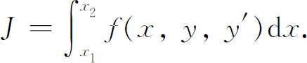
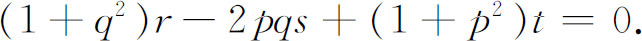

4．变分法中的有关问题
我们对变分法历史的说明主要集中于积分

还提到过一些其他问题，如等周问题、单个变量几个函数的问题（例如在最小作用原理中出现的问题），以及重积分的情形，这个情形拉格朗日首先论述过，而且在极小曲面问题中就出现过（第24章第4节）。有许多种与变分法有关的问题，诸如以参数表示x＝x（t）和y＝y（t）来处理的极小化或极大化曲线———魏尔斯特拉斯详尽地讨论了这个问题———以及主要在动力学中的一些问题，其中出现在被积函数中的变量受一些辅助方程的限制，这些辅助方程称为约束。最后这类问题多少也与等周问题有关，因为在等周问题中也规定了一个辅助条件，即规定了围出最大面积的曲线的长度（虽然在等周问题中辅助条件是以表示曲线长度的积分这种形式出现的），而在动力约束的情形下，一个或一组约束条件的形式是包含自变量和应变量甚至包含应变量的微分的方程。还有一个早就讨论过的重要问题叫做狄利克雷问题（第28章第4节和第8节）。
我们将不去追溯这些问题的详细历史，因为尽管这些问题是有意义的而且到如今已经做了相当多的工作，但是没有一个数学发展的重要特征是出自这些问题的。也许值得提一下的是极小曲面的课题，这个问题要求解方程

从1817年安培的一篇论文以后，直到比利时物理学家普拉托（Joseph Plateau，1801—1883）在1873年写的一本书《遵从单一分子模型的流体静力学实验与理论》（Statique expérimentale et théorique des liquides soumis aux seules formes moléculaires）为止，关于极小曲面问题的研究一直是不活跃的。普拉托在他的书中指出，如果人们把具有闭曲线形状的金属丝浸到甘油溶液（或肥皂水）中，然后把金属丝取出来，那么具有最小面积的曲面形状的肥皂薄膜就张成金属丝边界。于是，为了研究由一条空间闭曲线所围的极小曲面问题，数学家们接受了一种新的刺激。因为边界曲线或曲线组可以非常复杂，极小曲面问题真正的显式解析解也许是不可能得到的。这个问题现在被称为普拉托问题，导致关于至少是解的存在性证明的研究，由此可以导出解的某些性质。
参考书目
Dresden，Arnold：“Some Recent Work in the Calculus of Variations，”Amer．Math．Soc．Bull．，32，1926，475-521．
Duren，W．L．，Jr．：“The Development of Sufficient Conditions in the Calculus of Variations，”University of Chicago Contributions to the Calculus of Variations，Ⅰ，1930，245-349，University of Chicago Press，1931．
Hamilton，W．R．：The Mathematical Papers，3 vols．，Cambridge University Press，1931，1940 and 1967．
Jacobi，C．G．J．：Gesammelte Werke，G．Reimer，1886 and 1891，Chelsea （reprint），1968，Vols．4 and 7．
Jacobi，C．G．J．：Vorlesungen über Dynamik （1866），Chelsea （reprint），1968．Also in Vol．8 of Jacobi's Gesammelte Werke．
McShane，E．J．：“Recent Developments in the Calculus of Variations，”Amer．Math．Soc．Semicentennial Publications，Ⅱ，1938，69-97．
Porter，Thomas Isaac：“A History of the Classical Isoperimetric Problem，”University of Chicago Contributions to the Calculus of Variations，Ⅱ，475-517，University of Chicago Press，1933．
Prange，Georg：“Die allgemeinen Integrationsmethoden der analytischen Mechanik，”Encyk．der Math．Wiss．，B．G．Teubner，1904-1935，Ⅳ，2，509-804．
Todhunter，Isaac：A History of the Calculus of Variations in the Nineteenth Century，Chelsea （reprint），1962．
Weierstrass，Karl：Werke，Akademische Verlagsgesellschaft，1927，Vol．7．
————————————————————
(1) Misc．Taur．，22，1760/1761，196-298，pub．1762＝Œuvres，1，365-468．
(2) Jour．für Math．，4，1829，232-235＝Werke，5，23-28．
(3) Jour．de l'Ecole Poly．，8，1809，266-344．
(4) 1833，795-826＝Math．Papers，1，311-332．
(5) Phil．Trans．，1834，PartⅡ，247-308；1835，PartⅠ，95-144＝Math．Papers，2，103-211 ．
(6) Jour．für Math．，17，1837，97-162＝Ges．Werke，4，57-127．
(7) Jour．für Math．，17，1837，68-82＝Ges．Werke，4，39-55．
(8) Nachrichten König．Ges．derWiss．zu Gött．，1900，291-296＝Ges．Abh．，3，323-329．在Amer． Math．Soc．Bull．，8，1902，472-478上有一个由纽瑟姆（Mary Winston Newsom）翻译的英译本。这个材料是1900年希尔伯特的著名论文《数学问题》（Mathematical Problems）的一部分。